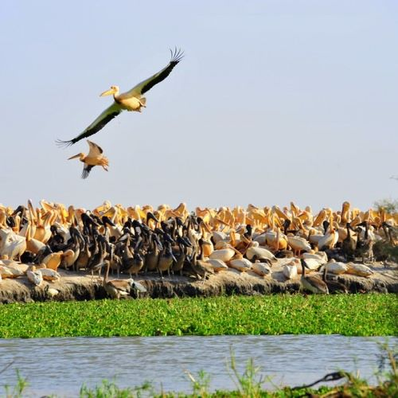
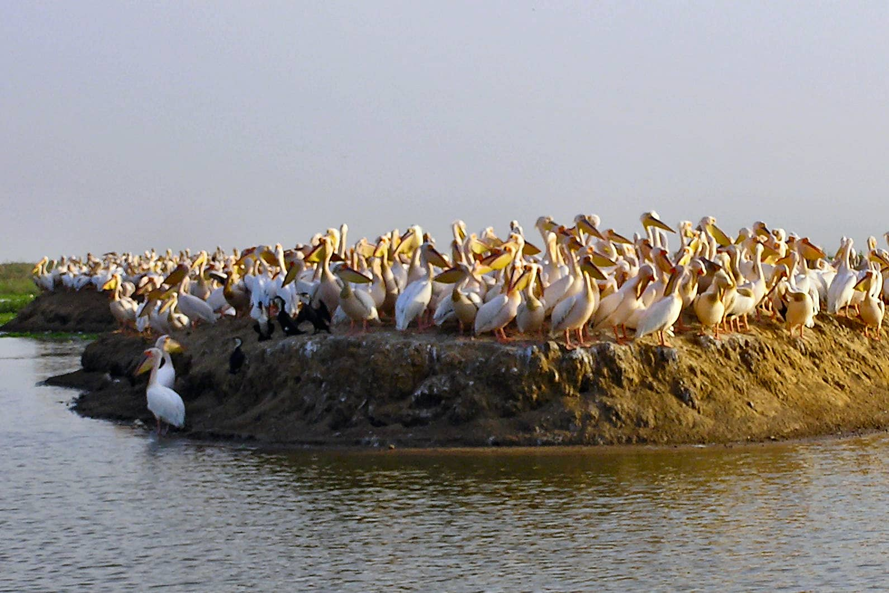
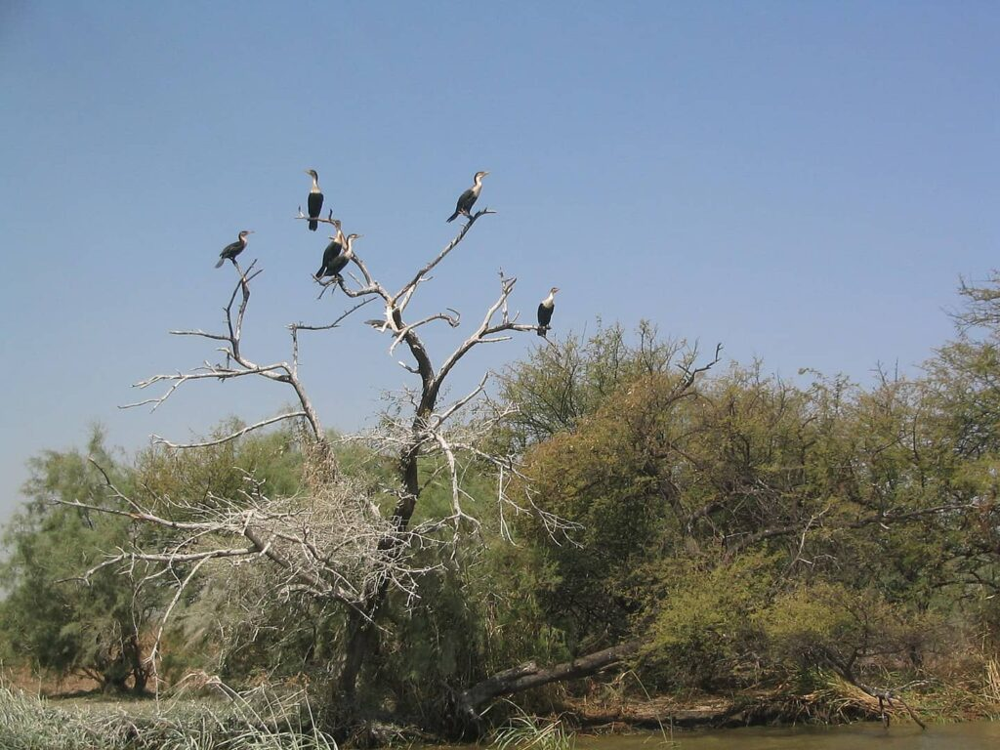
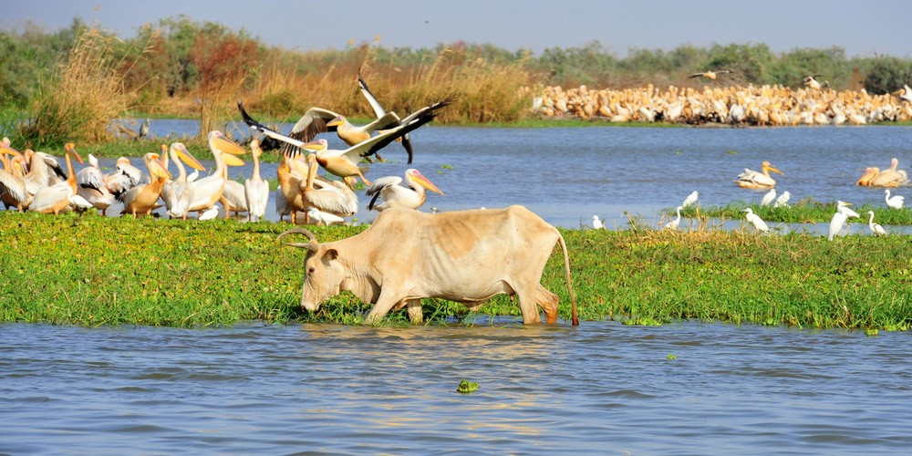
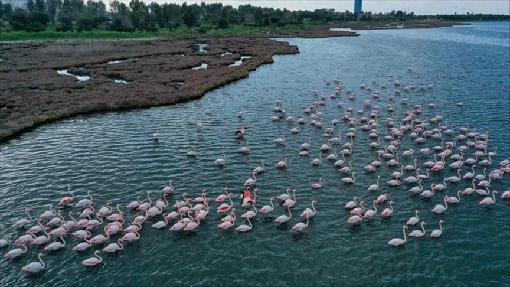
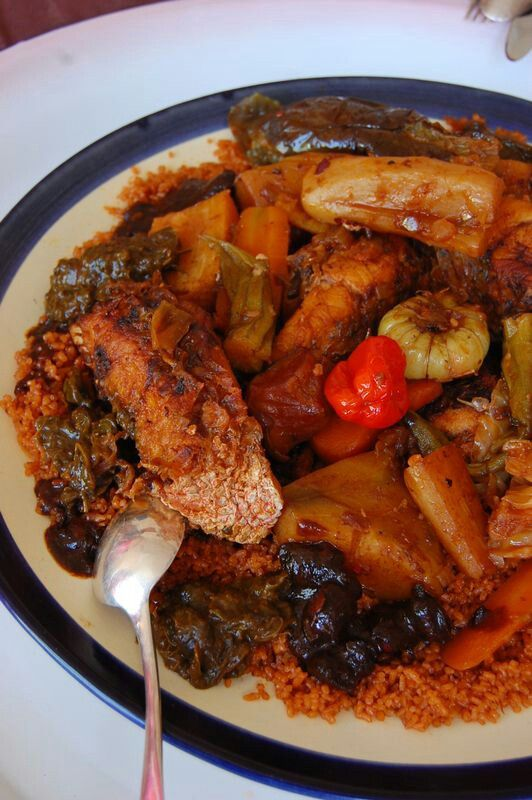
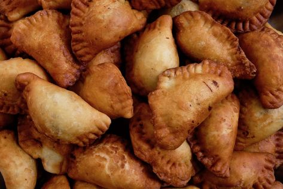
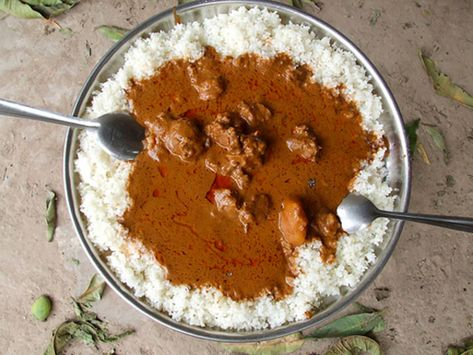

Le parc national de Djoudj
Description
Le parc du Djoudj est le troisième parc ornithologique du monde. À visiter absolument lors de votre passage à Saint-Louis. Il se trouve à 60 kilomètres au nord de Saint-Louis, sur un des méandres du fleuve Sénégal. Englobant une partie du fleuve, avec de nombreux canaux, criques, lacs, bassins, marécages et bouquets de roseaux, ainsi que les zones environnantes de savane boisée, le parc s’étend sur 16 000 ha et dispose d’un plan d’eau permanent, ce qui attire de nombreuses espèces d’oiseaux.
Chaque année, environ 3 millions d’oiseaux transitent par le parc où près de 400 espèces ont été dénombrées.



Activités
Vous pouvez organiser votre excursion par vous-même ou passer par une agence de voyage locale. Dans tous les cas, il est conseillé de réserver à l'avance car l'afflux de touristes peut être important pendant les périodes de migration des oiseaux.
Il est conseillé de partir tôt le matin pour éviter la chaleur de la journée.
Une fois arrivé au parc, vous serez accueilli par un guide local qui vous accompagnera pendant toute la visite. Les oiseaux migrateurs sont les principaux protagonistes de la visite. Vous pourrez observer des milliers de flamants roses, de pélicans, de cormorans et d'autres espèces d'oiseaux qui font du parc national du Djoudj leur lieu de nidification.
Après la visite, vous retournerez à Saint-Louis ou à votre point de départ. Il est conseillé de prévoir suffisamment de temps pour le trajet retour car les routes peuvent être encombrées.


Gastronomie
La gastronomie de Saint-Louis du Sénégal est fortement influencée par la cuisine sénégalaise traditionnelle, ainsi que par les influences culinaires des pays voisins tels que la Mauritanie et le Mali. La ville est également connue pour ses plats de fruits de mer frais, qui sont pêchés dans les eaux environnantes du fleuve Sénégal et de l'océan Atlantique.
Le Yassa est également très apprécié, il s'agit d'un plat de poulet ou de poisson mariné dans une sauce à base d'oignons, de citron et de moutarde.
Les grillades de poissons frais sont également très populaires dans la région, notamment le capitaine, le mérou et le thiof. Enfin, Saint-Louis est également connue pour ses desserts, notamment le thiakry, un dessert sucré à base de semoule de mil, de lait, de sucre et de jus de fruits, ainsi que les beignets frits appelés boulettes de pain de singe.k



Historique
Ancienne capitale du Sénégal et de l'Afrique Occidentale française, Saint-Louis reste la cité phare du pays. Elle fut construite officiellement au milieu du XVIIème siècle par les Européens qui la nommèrent ainsi en l'honneur du roi Louis XIV. L'architecture coloniale empreinte du style méditerranéen et la situation géographique en bord de mer confèrent à Saint-Louis un intérêt touristique certain. Anciennement surnommée la "Venise africaine", Saint-Louis du Sénégal est aujourd'hui classée au patrimoine mondiale de l'UNESCO. L'île de Saint-Louis est une merveilleuse terre située dans la région nord du Sénégal. L'ancienne capitale de l'Afrique de l'ouest est très appréciée par les touristes. Avec ses belles plages et ses palmiers, Saint-Louis offre aux plaisanciers un magnifique cadre pour découvrir une magnifique contrée. Alors qu'attendez vous pour visiter cet antre de la culture ? Vous serez enchantés par ses paysages et ses édifices témoins d'une histoire coloniale impressionnante. Les amateurs de musique pourront également se réjouir car chaque année, la « capitale du bon goût » organise rien que pour vous, un festival international de jazz. Attendez vous à être émus par tant de grâce. Et c'est l'Unesco qui le souligne en la classant au patrimoine de l'humanité.
Guide
- Période : La meilleure période pour visiter le parc national du Djoudj est de novembre à avril, pendant la saison sèche. C'est la période de migration des oiseaux et vous aurez plus de chances de les observer.
- Hébergement : Vous pouvez séjourner à Saint-Louis ou dans les lodges du parc pour être au plus près des oiseaux et de la nature.
- Transport : Vous pouvez vous rendre au parc national du Djoudj en voiture ou en taxi depuis Saint-Louis, ou passer par une agence de voyage locale pour organiser votre transfert.
- Visite : La visite du parc se fait principalement en bateau avec un guide local. Il est conseillé de prévoir une visite de 2 à 3 heures pour observer la faune et la flore de la région.
- Précautions : Il est recommandé de porter des vêtements légers et confortables, un chapeau ou une casquette, de la crème solaire et des chaussures confortables pour la visite du parc. Il est également conseillé de prévoir de l'eau et de la nourriture pour la journée.